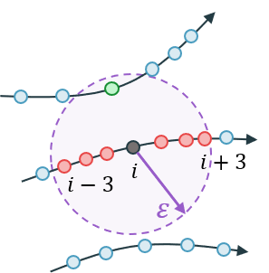

Numerical Data
The word "timeseries" can be confusing, because it can mean a univariate (also called scalar or one-dimensional) timeseries or a multivariate (also called multi-dimensional) timeseries. To resolve this confusion, in DynamicalSystems.jl we have the following convention: "timeseries" always refers to a one-dimensional vector of numbers, which exists with respect to some other one-dimensional vector of numbers that corresponds to a time-vector. On the other hand, the word "trajectory" is used to refer to a multi-dimensional timeseries, which is of course simply a group/set of one-dimensional timeseries.
Datasets
Trajectories (and in general sets in state space) in DynamicalSystems.jl are represented by a structure called Dataset (while timeseries are standard Julia Vectors).
DelayEmbeddings.Dataset — TypeDataset{D, T} <: AbstractDataset{D,T}A dedicated interface for datasets. It contains equally-sized datapoints of length D, represented by SVector{D, T}. These data are contained in the field .data of a dataset, as a standard Julia Vector{SVector}.
When indexed with 1 index, a dataset is like a vector of datapoints. When indexed with 2 indices it behaves like a matrix that has each of the columns be the timeseries of each of the variables.
Dataset also supports most sensible operations like append!, push!, hcat, eachrow, among others, and when iterated over, it iterates over its contained points.
Description of indexing
In the following let i, j be integers, typeof(data) <: AbstractDataset and v1, v2 be <: AbstractVector{Int} (v1, v2 could also be ranges).
data[i]gives theith datapoint (returns anSVector)data[v1]will return a vector of datapointsdata[v1, :]using aColonas a second index will return aDatasetof these pointsdata[:, j]gives thejth variable timeseries, asVectordata[v1, v2]returns aDatasetwith the appropriate entries (first indices being "time"/point index, while second being variables)data[i, j]value of thejth variable, at theith timepoint
Use Matrix(dataset) or Dataset(matrix) to convert. It is assumed that each column of the matrix is one variable. If you have various timeseries vectors x, y, z, ... pass them like Dataset(x, y, z, ...). You can use columns(dataset) to obtain the reverse, i.e. all columns of the dataset in a tuple.
In essence a Dataset is simply a wrapper for a Vector of SVectors. However, it is visually represented as a matrix, similarly to how numerical data would be printed on a spreadsheet (with time being the column direction). It also offers a lot more functionality than just pretty-printing. Besides the examples in the documentation string, you can e.g. iterate over data points
using DynamicalSystems
hen = Systems.henon()
data = trajectory(hen, 10000) # this returns a dataset
for point in data
# stuff
endMost functions from DynamicalSystems.jl that manipulate and use multidimensional data are expecting a Dataset. This allows us to define efficient methods that coordinate well with each other, like e.g. embed.
Dataset Functions
DelayEmbeddings.minima — Functionminima(dataset)Return an SVector that contains the minimum elements of each timeseries of the dataset.
DelayEmbeddings.maxima — Functionmaxima(dataset)Return an SVector that contains the maximum elements of each timeseries of the dataset.
DelayEmbeddings.minmaxima — Functionminmaxima(dataset)Return minima(dataset), maxima(dataset) without doing the computation twice.
DelayEmbeddings.columns — Functioncolumns(dataset) -> x, y, z, ...Return the individual columns of the dataset.
Dataset I/O
Input/output functionality for an AbstractDataset is already achieved using base Julia, specifically writedlm and readdlm. To write and read a dataset, simply do:
using DelimitedFiles
data = Dataset(rand(1000, 2))
# I will write and read using delimiter ','
writedlm("data.txt", data, ',')
# Don't forget to convert the matrix to a Dataset when reading
data = Dataset(readdlm("data.txt", ',', Float64))Neighborhoods
Neighborhoods refer to the common act of finding points in a dataset that are nearby a given point (which typically belongs in the dataset). DynamicalSystems.jl bases this interface on Neighborhood.jl. You can go to its documentation if you are interested in finding neighbors in a dataset for e.g. a custom algorithm implementation.
For DynamicalSystems.jl, what is relevant are the two types of neighborhoods that exist:
Neighborhood.NeighborNumber — TypeNeighborNumber(k::Int) <: SearchTypeSearch type representing the k nearest neighbors of the query (or approximate neighbors, depending on the search structure).
Neighborhood.WithinRange — TypeWithinRange(r::Real) <: SearchTypeSearch type representing all neighbors with distance ≤ r from the query (according to the search structure's metric).
Theiler window
The Theiler window is a concept that is useful when finding neighbors in a dataset that is coming from the sampling of a continuous dynamical system. As demonstrated in the figure below, it tries to eliminate spurious "correlations" (wrongly counted neighbors) due to a potentially dense sampling of the trajectory (e.g. by giving small sampling time in trajectory).
The figure below demonstrates a typical WithinRange search around the black point with index i. Black, red and green points are found neighbors, but points within indices j that satisfy |i-j| ≤ w should not be counted as "true" neighbors. These neighbors are typically the same around any state space point, and thus wrongly bias calculations by providing a non-zero baseline of neighbors. For the sketch below, w=3 would have been used.
Typically a good choice for w coincides with the choice an optimal delay time, see estimate_delay, for any of the timeseries of the dataset.
